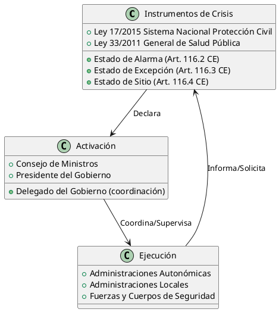
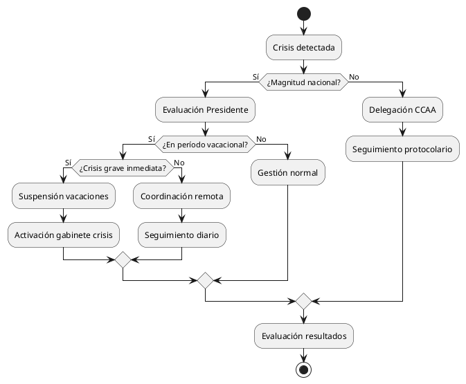
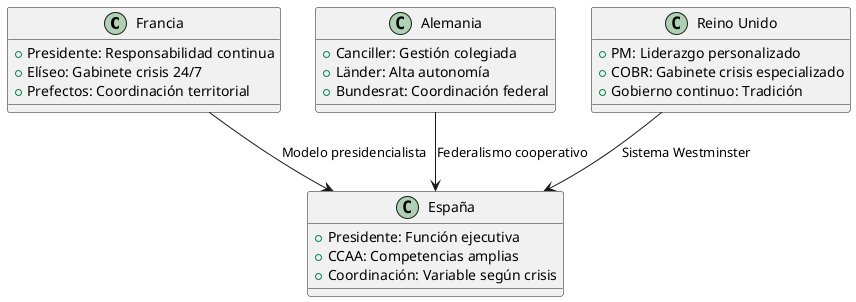
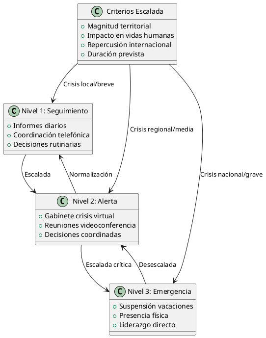

Análisis Crítico: Gestión Gubernamental en Períodos Vacacionales y Delegación de Competencias en Crisis
Análisis Crítico: Gestión Gubernamental en Períodos Vacacionales y Delegación de Competencias en Crisis
Introducción
Este documento examina las decisiones del Presidente del Gobierno español respecto a la gestión de crisis durante períodos vacacionales, analizando el marco competencial, las opciones disponibles, y las implicaciones éticas y políticas de la delegación de responsabilidades a las Comunidades Autónomas.
Marco Jurídico-Competencial
Distribución de Competencias según la Constitución
| Nivel Administrativo | Competencias en Emergencias | Base Legal |
|---|---|---|
| Estado | Seguridad pública, Defensa nacional | Art. 149.1.4ª CE |
| Estado | Coordinación general de sanidad | Art. 149.1.16ª CE |
| Estado | Protección civil (coordinación) | Art. 149.1.29ª CE |
| CCAA | Gestión sanitaria | Art. 148.1.21ª CE |
| CCAA | Protección civil (ejecución) | Competencia residual |
| Estado/CCAA | Medio ambiente | Competencia compartida |
Instrumentos Normativos de Crisis

Análisis de Opciones Presidenciales
Matriz de Decisiones en Período Vacacional
| Opción | Ventajas | Inconvenientes | Probabilidad | Impacto Político |
|---|---|---|---|---|
| Suspensión vacaciones | Control directo, liderazgo visible | Desgaste personal, críticas oposición | Media | Alto positivo |
| Coordinación remota | Flexibilidad, respeto competencias | Percepción abandono, retrasos decisión | Alta | Medio negativo |
| Delegación total CCAA | Respeto autonomía, desresponsabilización | Falta coordinación, fragmentación | Baja | Alto negativo |
| Gabinete crisis permanente | Continuidad institucional | Costes políticos y económicos | Media | Medio positivo |
Diagrama de Flujo Decisional

Análisis Ético y de Responsabilidad
Principios Éticos en Conflicto
Responsabilidad Política
- Principio de responsabilidad: El cargo conlleva disponibilidad permanente
- Legitimidad democrática: Mandato ciudadano implica servicio continuo
- Ejemplaridad: Función simbólica del liderazgo en crisis
Derechos Personales vs. Función Pública
- Derecho al descanso: Reconocido constitucionalmente (Art. 40.2 CE)
- Proporcionalidad: Balance entre vida personal y función pública
- Sostenibilidad: Prevención del agotamiento en el ejercicio del poder
Evaluación Ética por Escenarios
| Escenario | Dilema Ético Principal | Justificación Suspensión | Justificación Continuación |
|---|---|---|---|
| Emergencia sanitaria | Vida vs. Autonomía personal | Deber de protección ciudadanía | Competencia autonómica sanitaria |
| Catástrofe natural | Solidaridad vs. Subsidiariedad | Liderazgo simbólico necesario | Gestión local más eficiente |
| Crisis económica | Estabilidad vs. Normalidad | Confianza mercados/ciudadanía | Continuidad institucional |
| Conflicto internacional | Seguridad vs. Vida privada | Responsabilidad constitucional | Delegación en Ministros |
Precedentes Históricos y Comparados
Casos Españoles Relevantes
| Año | Presidente | Crisis | Decisión | Valoración Posterior |
|---|---|---|---|---|
| 2003 | Aznar | Prestige | Continuó agenda | Críticas por tardanza |
| 2004 | Zapatero | Atentados 11-M | Suspensión campaña | Consenso positivo |
| 2020 | Sánchez | COVID-19 | Confinamiento personal | Liderazgo crisis sanitaria |
| 2021 | Sánchez | Erupción La Palma | Visitas frecuentes | Valoración territorial positiva |
Comparación Internacional

Análisis Coste-Beneficio Institucional
Costes de la No Intervención
| Tipo de Coste | Descripción | Cuantificación | Mitigación Posible |
|---|---|---|---|
| Político | Pérdida confianza ciudadana | Alto (encuestas) | Comunicación proactiva |
| Institucional | Debilitamiento liderazgo | Medio-Alto | Delegación competente |
| Social | Percepción abandono | Variable según crisis | Presencia territorial |
| Económico | Ineficiencias coordinación | Medio | Protocolos automatizados |
Beneficios de la Delegación Competencial
| Beneficio | Justificación Teórica | Evidencia Empírica | Limitaciones |
|---|---|---|---|
| Proximidad | Conocimiento territorial | Gestión COVID-19 CCAA | Descoordinación |
| Eficiencia | Especialización funcional | Emergencias locales | Recursos limitados |
| Legitimidad | Respeto marco competencial | Consenso autonómico | Crisis suprarregionales |
| Sostenibilidad | Distribución cargas | Prevención centralización | Responsabilidad difusa |
Propuestas de Mejora Institucional
Protocolo de Crisis Vacacionales

Recomendaciones Normativas
Modificaciones Legales Propuestas
- Ley del Presidente del Gobierno: Clarificación obligaciones en crisis
- Ley de Protección Civil: Protocolos automáticos de coordinación
- Reglamento Consejo Ministros: Procedimientos decision remota
Mejoras Organizativas
| Ámbito | Propuesta | Justificación | Implementación |
|---|---|---|---|
| Comunicación | Centro crisis 24/7 | Información continua | 6 meses |
| Coordinación | Plataforma digital unificada | Eficiencia interadministrativa | 12 meses |
| Formación | Simulacros regulares | Preparación equipos | Continua |
| Evaluación | Auditorías post-crisis | Aprendizaje institucional | Después cada crisis |
Conclusiones
Síntesis Evaluativa
El análisis revela tensiones estructurales entre la responsabilidad política personal del Presidente y el modelo descentralizado español. La gestión de crisis durante períodos vacacionales expone estas contradicciones sistémicas.
Recomendaciones Principales
- Institucionalización: Crear protocolos claros y automáticos
- Flexibilización: Adaptar respuesta a magnitud real de la crisis
- Transparencia: Comunicación proactiva de decisiones y criterios
- Evaluación: Sistemas de aprendizaje institucional post-crisis
Reflexión Final
La cuestión trasciende el dilema personal del Presidente para plantear interrogantes sobre la arquitectura institucional española y su capacidad de respuesta ante crisis complejas en un Estado autonómico moderno.
Referencias Documentales
Fuentes Normativas
- Constitución Española de 1978
- Ley Orgánica 4/1981, de 1 de junio, de los estados de alarma, excepción y sitio
- Ley 17/2015, de 9 de julio, del Sistema Nacional de Protección Civil
- Ley 50/1997, de 27 de noviembre, del Gobierno
Fuentes Doctrinales
- García de Enterría, E. (2019). "La distribución de competencias en situaciones de crisis"
- Pemán Gavín, J. (2020). "El Estado autonómico ante las emergencias"
- Velasco Caballero, F. (2021). "Constitución y crisis sanitaria"
Fuentes Periodísticas y Documentales
- Informes del Centro de Investigaciones Sociológicas (CIS) 2020-2024
- Hemeroteca digital de El País, El Mundo, ABC (2003-2024)
- Boletines Oficiales del Estado y Comunidades Autónomas
—
Nota metodológica: Este análisis se basa en documentación pública disponible y precedentes históricos. Las valoraciones éticas y políticas reflejan diferentes perspectivas doctrinales sin asumir una posición partisan específica.